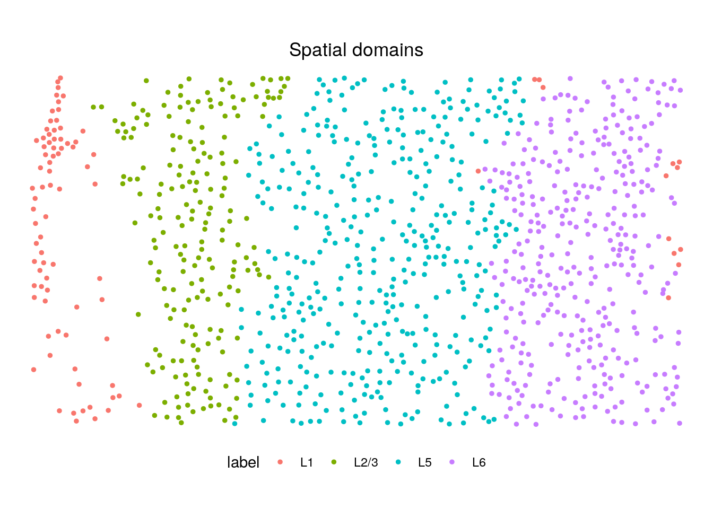
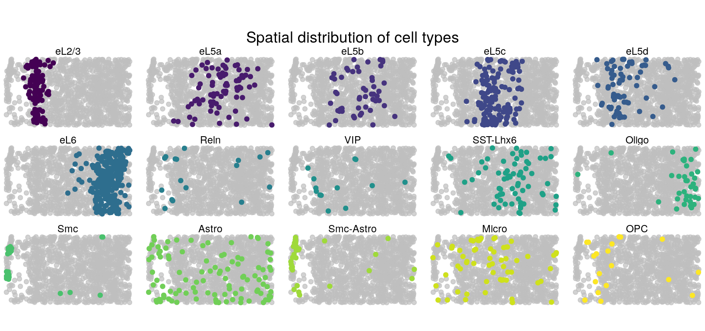
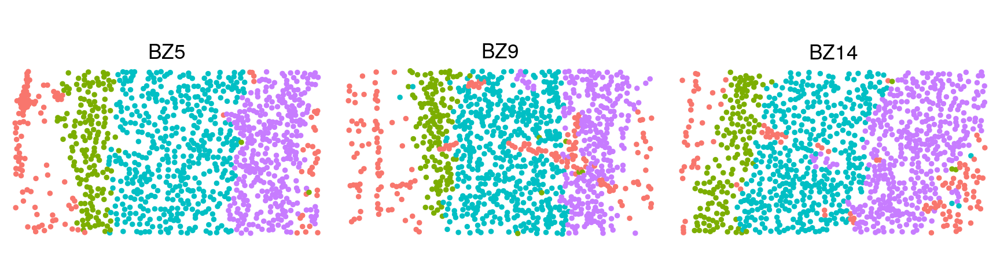
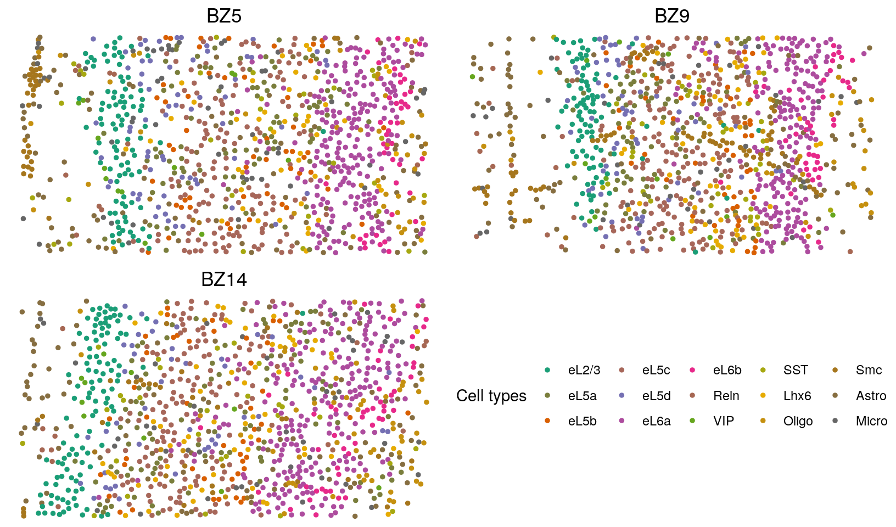
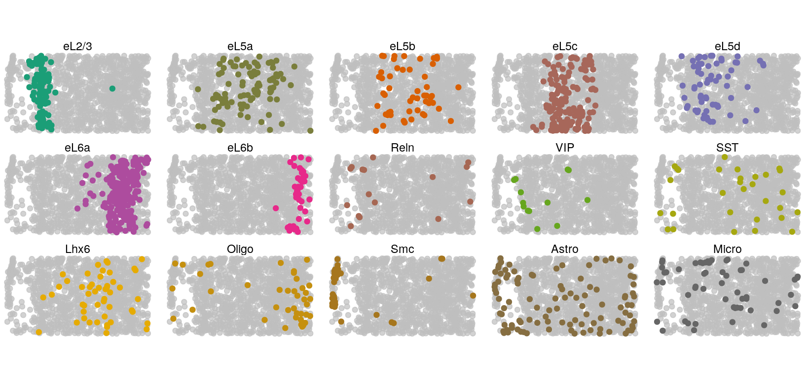
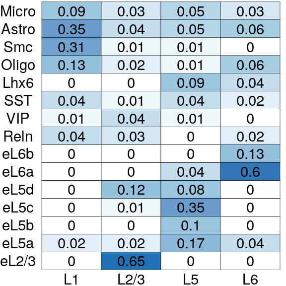

STARmap (Wang et al., 2018) analysis
Zheng Li
2022-02-24
Last updated: 2022-02-27
Checks: 7 0
Knit directory: BASS-analysis/
This reproducible R Markdown analysis was created with workflowr (version 1.7.0). The Checks tab describes the reproducibility checks that were applied when the results were created. The Past versions tab lists the development history.
Great! Since the R Markdown file has been committed to the Git repository, you know the exact version of the code that produced these results.
Great job! The global environment was empty. Objects defined in the global environment can affect the analysis in your R Markdown file in unknown ways. For reproduciblity it’s best to always run the code in an empty environment.
The command set.seed(0) was run prior to running the code in the R Markdown file. Setting a seed ensures that any results that rely on randomness, e.g. subsampling or permutations, are reproducible.
Great job! Recording the operating system, R version, and package versions is critical for reproducibility.
Nice! There were no cached chunks for this analysis, so you can be confident that you successfully produced the results during this run.
Great job! Using relative paths to the files within your workflowr project makes it easier to run your code on other machines.
Great! You are using Git for version control. Tracking code development and connecting the code version to the results is critical for reproducibility.
The results in this page were generated with repository version 4ec8df1. See the Past versions tab to see a history of the changes made to the R Markdown and HTML files.
Note that you need to be careful to ensure that all relevant files for the analysis have been committed to Git prior to generating the results (you can use wflow_publish or wflow_git_commit). workflowr only checks the R Markdown file, but you know if there are other scripts or data files that it depends on. Below is the status of the Git repository when the results were generated:
working directory clean
Note that any generated files, e.g. HTML, png, CSS, etc., are not included in this status report because it is ok for generated content to have uncommitted changes.
These are the previous versions of the repository in which changes were made to the R Markdown (analysis/STARmap.Rmd) and HTML (docs/STARmap.html) files. If you’ve configured a remote Git repository (see ?wflow_git_remote), click on the hyperlinks in the table below to view the files as they were in that past version.
| File | Version | Author | Date | Message |
|---|---|---|---|---|
| Rmd | 4ec8df1 | zhengli09 | 2022-02-27 | Publish the introduction, simulation analysis and STARmap analysis |
Introduction
Here, we apply BASS to analyze the STARmap mPFC (mouse medial prefrontal cortex) data from Wang et al. 2018. For single-sample analysis, we focus on the tissue section BZ5. For multi-sample analysis, we focus on tissue sections BZ5, BZ9 and BZ14 that were measured on the mPFC region of different mice. The original data can be downloaded from here. We excluded cells that are annotated to be “NA” class by the original study as they were not confidently identified to be any cell type. Finally, we obtained the same set of 166 genes measured on 1,049 (BZ5), 1,053 (BZ9), and 1,088 (BZ14) cells along with their centroid coordinates for the following analysis. The processed data can be download from the data directory. For detailed usage of all the functions, please refer to the software tutorial section.
library(BASS)
load("data/starmap_mpfc.RData")Single-sample analysis
Load data and set hyper-parameters
# We focus on the tissue section BZ5 in the single-sample analysis
cnts <- starmap_cnts["20180417_BZ5_control"] # 166x1049 count data
info <- starmap_info["20180417_BZ5_control"]
xy <- lapply(info, function(info.i){
as.matrix(info.i[, c("x", "y")]) # 1049x2 spatial coordiantes
})
cnts[[1]][1:5,1:5] 69x4486 93x1063 143x3445 88x4092 120x4293
Acss1 0 0 0 0 0
Adcyap1 0 3 0 0 0
Adgrl2 0 0 16 1 7
Aqp4 0 0 8 11 32
Arc 3 3 1 5 0head(xy[[1]]) x y
69x4486 68.86374 4486.029
93x1063 92.84376 1062.676
143x3445 142.82557 3444.635
88x4092 88.18908 4092.441
120x4293 119.93251 4293.439
104x2648 103.63420 2647.580# hyper-parameters
C <- 15 # number of cell types
R <- 4 # number of spatial domainsRun BASS
set.seed(0)
# Set up BASS object
BASS <- createBASSObject(cnts, xy, C = C, R = R,
beta_est_approach = "ACCUR_EST",
burn_in = 10000, samples = 10000)***************************************
Bayesian Analytics for Spatial Segmentation (BASS)
Authors: Zheng Li, Xiang Zhou
Affiliate: Department of Biostatistics, University of Michigan
INPUT INFO:
- Number of samples: 1
- Number of spots/cells: 1049
- Number of genes: 166
- Potts interaction parameter estimation approach: ACCUR_EST
- Variance-covariance structure of gene expression features: EEE
To list all hyper-parameters, Type listAllHyper(BASS_object)
***************************************# Data pre-processing:
# 1.Library size normalization followed with a log2 transformation
# 2.Dimension reduction with PCA after standardizing all the genes
BASS <- BASS.preprocess(BASS, doLogNormalize = TRUE,
doPCA = TRUE, scaleFeature = TRUE, nPC = 20)***** Log-normalize gene expression data *****
***** Exclude genes with 0 expression *****
***** Reduce data dimension with PCA *****# Run BASS algorithm
BASS <- BASS.run(BASS)# post-process posterior samples:
# 1.Adjust for label switching with the ECR-1 algorithm
# 2.Summarize the posterior samples to obtain the cell type labels, spatial
# domain labels, and cell type proportion matrix estiamte
BASS <- BASS.postprocess(BASS)
......................................................................................
. Method Time (sec) Status .
......................................................................................
. ECR-ITERATIVE-1 58.144 Converged (3 iterations) .
......................................................................................
Relabelling all methods according to method ECR-ITERATIVE-1 ... done!
Retrieve the 1 permutation arrays by typing:
[...]$permutations$"ECR-ITERATIVE-1"
Retrieve the 1 best clusterings: [...]$clusters
Retrieve the 1 CPU times: [...]$timings
Retrieve the 1 X 1 similarity matrix: [...]$similarity
Label switching finished. Total time: 61.9 seconds.
......................................................................................
. Method Time (sec) Status .
......................................................................................
. ECR-ITERATIVE-1 21.093 Converged (2 iterations) .
......................................................................................
Relabelling all methods according to method ECR-ITERATIVE-1 ... done!
Retrieve the 1 permutation arrays by typing:
[...]$permutations$"ECR-ITERATIVE-1"
Retrieve the 1 best clusterings: [...]$clusters
Retrieve the 1 CPU times: [...]$timings
Retrieve the 1 X 1 similarity matrix: [...]$similarity
Label switching finished. Total time: 22.8 seconds. clabels <- BASS@res_postprocess$c_ls # cell type clusters
zlabels <- BASS@res_postprocess$z_ls # spatial domain labels
pi_est <- BASS@res_postprocess$pi_ls # cell type composition matrixAnnotate cell types
library(Seurat)
library(dplyr)l <- 1 # tissue section number
# Perform DE analysis with Seurat
seu_obj <- CreateSeuratObject(counts = cnts[[l]], min.cells = 1)
seu_obj <- NormalizeData(seu_obj)
seu_obj <- ScaleData(seu_obj, features = rownames(seu_obj))Centering and scaling data matrixseu_obj <- RunPCA(seu_obj, features = rownames(seu_obj), verbose = F)
Idents(seu_obj) <- factor(clabels[[l]])
markers <- FindAllMarkers(seu_obj, only.pos = T,
min.pct = 0, logfc.threshold = 0, verbose = F)
top5 <- markers %>%
group_by(cluster) %>%
top_n(n = 5, wt = avg_logFC)
subset(top5, cluster == 7) # Markers of eL2/3 cells# A tibble: 5 × 7
# Groups: cluster [1]
p_val avg_logFC pct.1 pct.2 p_val_adj cluster gene
<dbl> <dbl> <dbl> <dbl> <dbl> <fct> <chr>
1 3.13e-62 2.41 0.892 0.181 5.20e-60 7 Cux2
2 3.42e-29 1.41 0.753 0.254 5.68e-27 7 Nos1
3 5.14e-29 1.63 0.634 0.167 8.53e-27 7 Synpr
4 2.70e-21 1.15 0.914 0.546 4.48e-19 7 Nov
5 1.57e-19 1.15 0.892 0.611 2.61e-17 7 Otof # By checking the top DE genes of each cell type cluster, we annotate
# specific cell types for each cluster
cTypes <- c("eL5d", "eL6", "OPC", "eL5c", "eL5a",
"Astro", "eL2/3", "Reln", "SST-Lhx6", "eL5b",
"Smc", "Micro", "Smc-Astro", "Oligo", "VIP")
clabels_l <- factor(clabels[[l]])
levels(clabels_l) <- cTypesVisualization
You can refer to visualization for some useful plotting functions or you can write your own code for plotting.
library(ggplot2)
source("code/viz.R")
# Spatial domains
zlabels_l <- factor(zlabels[[l]])
levels(zlabels_l) <- c("L2/3", "L1", "L6", "L5")
zlabels_l <- factor(zlabels_l, c("L1", "L2/3", "L5", "L6"))
plotClusters(xy[[l]], labels = zlabels_l, title = "Spatial domains") +
theme(legend.position = "bottom")
# Cell types
library(gghighlight)
clabels_l <- factor(clabels_l, levels = c(
"eL2/3", "eL5a", "eL5b", "eL5c", "eL5d", "eL6",
"Reln", "VIP", "SST-Lhx6",
"Oligo", "Smc", "Astro", "Smc-Astro", "Micro", "OPC")
)
plotCellTypes(xy, clabels_l, ncol = 5) +
ggtitle("Spatial distribution of cell types") +
theme(plot.title = element_text(hjust = 0.5))
# Cell type compositions in each spatial domain
pi_est <- BASS@res_postprocess$pi_ls
pi_est <- pi_est[match(levels(clabels_l), cTypes), c(2, 1, 4, 3)]
rownames(pi_est) <- levels(clabels_l)
colnames(pi_est) <- levels(zlabels_l)
plotCellTypeComp(pi_est)
Multi-sample analysis
Load data and set hyper-parameters
# We use all the three tissue sections: BZ5, BZ9, and BZ14 in
# the multi-sample analysis
xy <- lapply(starmap_info, function(info.i){
as.matrix(info.i[, c("x", "y")]) # spatial coordiantes
})
cnts <- starmap_cnts # count matrices for three tissue sections
# hyper-parameters
C <- 15 # number of cell types
R <- 4 # number of spatial domainsRun BASS
set.seed(0)
# Set up BASS object
BASS <- createBASSObject(cnts, xy, C = C, R = R,
beta_est_approach = "ACCUR_EST",
burn_in = 10000, samples = 10000)***************************************
Bayesian Analytics for Spatial Segmentation (BASS)
Authors: Zheng Li, Xiang Zhou
Affiliate: Department of Biostatistics, University of Michigan
INPUT INFO:
- Number of samples: 3
- Number of spots/cells: 1049 1053 1088
- Number of genes: 166
- Potts interaction parameter estimation approach: ACCUR_EST
- Variance-covariance structure of gene expression features: EEE
To list all hyper-parameters, Type listAllHyper(BASS_object)
***************************************# Data pre-processing:
# In addition to the log-normalization and dimension reduction with
# PCA, we also conduct a batch effect adjustment using the Harmony
# package.
BASS <- BASS.preprocess(BASS, doLogNormalize = TRUE,
doPCA = TRUE, scaleFeature = TRUE, nPC = 20)***** Log-normalize gene expression data *****
***** Exclude genes with 0 expression *****
***** Reduce data dimension with PCA *****
***** Correct batch effect with Harmony *****# Run BASS algorithm
BASS <- BASS.run(BASS)# post-process posterior samples:
BASS <- BASS.postprocess(BASS)
......................................................................................
. Method Time (sec) Status .
......................................................................................
. ECR-ITERATIVE-1 118.055 Converged (3 iterations) .
......................................................................................
Relabelling all methods according to method ECR-ITERATIVE-1 ... done!
Retrieve the 1 permutation arrays by typing:
[...]$permutations$"ECR-ITERATIVE-1"
Retrieve the 1 best clusterings: [...]$clusters
Retrieve the 1 CPU times: [...]$timings
Retrieve the 1 X 1 similarity matrix: [...]$similarity
Label switching finished. Total time: 125.5 seconds.
......................................................................................
. Method Time (sec) Status .
......................................................................................
. ECR-ITERATIVE-1 53.527 Converged (2 iterations) .
......................................................................................
Relabelling all methods according to method ECR-ITERATIVE-1 ... done!
Retrieve the 1 permutation arrays by typing:
[...]$permutations$"ECR-ITERATIVE-1"
Retrieve the 1 best clusterings: [...]$clusters
Retrieve the 1 CPU times: [...]$timings
Retrieve the 1 X 1 similarity matrix: [...]$similarity
Label switching finished. Total time: 59.3 seconds. clabels <- BASS@res_postprocess$c_ls # cell type clusters
zlabels <- BASS@res_postprocess$z_ls # spatial domain labels
pi_est <- BASS@res_postprocess$pi_ls # cell type composition matrixAnnotate cell types
# Perform DE analysis with Seurat
cnts_all <- do.call(cbind, cnts)
seu_obj <- CreateSeuratObject(counts = cnts_all, min.cells = 1)
seu_obj <- NormalizeData(seu_obj)
seu_obj <- ScaleData(seu_obj, features = rownames(seu_obj))Centering and scaling data matrixseu_obj <- RunPCA(seu_obj, features = rownames(seu_obj), verbose = F)
Idents(seu_obj) <- factor(unlist(clabels))
markers <- FindAllMarkers(seu_obj, only.pos = T,
min.pct = 0, logfc.threshold = 0, verbose = F)
top5 <- markers %>%
group_by(cluster) %>%
top_n(n = 5, wt = avg_logFC)
subset(top5, cluster == 7) # Markers of eL6a cells# A tibble: 5 × 7
# Groups: cluster [1]
p_val avg_logFC pct.1 pct.2 p_val_adj cluster gene
<dbl> <dbl> <dbl> <dbl> <dbl> <fct> <chr>
1 4.90e-259 2.23 0.746 0.122 8.13e-257 7 Syt6
2 6.11e-252 1.65 0.983 0.485 1.01e-249 7 Pcp4
3 2.63e-207 1.70 0.878 0.287 4.37e-205 7 Sla
4 8.65e-127 1.23 0.589 0.146 1.44e-124 7 Foxp2
5 6.80e- 44 1.35 0.171 0.028 1.13e- 41 7 Rprm subset(top5, cluster == 3) # Markers of eL6b cells# A tibble: 5 × 7
# Groups: cluster [1]
p_val avg_logFC pct.1 pct.2 p_val_adj cluster gene
<dbl> <dbl> <dbl> <dbl> <dbl> <fct> <chr>
1 4.31e-86 2.74 0.947 0.324 7.15e-84 3 Ctgf
2 2.85e-46 1.23 0.977 0.57 4.73e-44 3 Pcp4
3 3.14e-27 1.43 0.737 0.357 5.21e-25 3 Cplx3
4 4.64e-27 1.21 0.632 0.238 7.70e-25 3 Nr4a2
5 8.89e-23 1.93 0.188 0.028 1.48e-20 3 Obox3# By checking the top DE genes of each cell type cluster, we annotate
# specific cell types for each cluster
cTypes <- c(
"Lhx6", "Micro", "eL6b", "eL5d", "eL2/3",
"Oligo", "eL6a", "eL5c", "Smc", "eL5a",
"eL5b", "Astro", "SST", "VIP", "Reln")
clabels <- lapply(clabels, function(clabels.l){
clabels.l <- factor(clabels.l)
levels(clabels.l) <- cTypes
clabels.l <- factor(clabels.l, levels = c(
"eL2/3", "eL5a", "eL5b", "eL5c", "eL5d",
"eL6a", "eL6b", "Reln", "VIP", "SST","Lhx6",
"Oligo", "Smc", "Astro", "Micro"
))
})Visualization
# Spatial domains
library(cowplot)
zlabels <- lapply(zlabels, function(zlabels.l){
zlabels.l <- factor(zlabels.l)
levels(zlabels.l) <- c("L6", "L5", "L2/3", "L1")
zlabels.l <- factor(zlabels.l, levels = c("L1", "L2/3", "L5", "L6"))
})
plist <- lapply(1:length(zlabels), function(i){
title.i <- c("BZ5", "BZ9", "BZ14")[i]
plotClusters(xy[[i]], labels = zlabels[[i]], title = title.i)
})
plot_grid(plotlist = plist, ncol = 3)
# Cell types
library(RColorBrewer)
getPalette <- colorRampPalette(brewer.pal(8, "Dark2"))
plist <- lapply(1:length(clabels), function(i){
title.i <- c("BZ5", "BZ9", "BZ14")[i]
plotClusters(xy[[i]], labels = clabels[[i]], title.i) +
scale_colour_manual("Cell types", values = getPalette(15))
})
legend <- get_legend(plist[[1]] + theme(legend.position = "bottom"))
plist <- append(plist, list(legend) , 3)
plot_grid(plotlist = plist, ncol = 2)
# Spatial distribution of cell types on tissue section BZ5
l <- 1
plotCellTypes(xy[[l]], clabels[[l]], ncol = 5) +
scale_colour_manual("Cell types", values = getPalette(15))
# Cell type compositions in each spatial domain
pi_est <- BASS@res_postprocess$pi_ls
pi_est <- pi_est[match(levels(clabels[[l]]), cTypes), c(4, 3, 2, 1)]
rownames(pi_est) <- levels(clabels[[l]])
colnames(pi_est) <- levels(zlabels[[l]])
plotCellTypeComp(pi_est)
sessionInfo()R version 4.1.2 (2021-11-01)
Platform: x86_64-pc-linux-gnu (64-bit)
Running under: Ubuntu 18.04.6 LTS
Matrix products: default
BLAS: /usr/lib/x86_64-linux-gnu/openblas/libblas.so.3
LAPACK: /usr/lib/x86_64-linux-gnu/libopenblasp-r0.2.20.so
locale:
[1] LC_CTYPE=en_US.UTF-8 LC_NUMERIC=C
[3] LC_TIME=en_US.UTF-8 LC_COLLATE=en_US.UTF-8
[5] LC_MONETARY=en_US.UTF-8 LC_MESSAGES=en_US.UTF-8
[7] LC_PAPER=en_US.UTF-8 LC_NAME=C
[9] LC_ADDRESS=C LC_TELEPHONE=C
[11] LC_MEASUREMENT=en_US.UTF-8 LC_IDENTIFICATION=C
attached base packages:
[1] stats graphics grDevices utils datasets methods base
other attached packages:
[1] RColorBrewer_1.1-2 cowplot_1.1.1 gghighlight_0.3.2 ggplot2_3.3.5
[5] dplyr_1.0.8 Seurat_3.2.3 BASS_1.0 mclust_5.4.9
[9] GIGrvg_0.5 workflowr_1.7.0
loaded via a namespace (and not attached):
[1] plyr_1.8.6 igraph_1.2.7
[3] lazyeval_0.2.2 splines_4.1.2
[5] BiocParallel_1.22.0 listenv_0.8.0
[7] scattermore_0.7 GenomeInfoDb_1.24.2
[9] scater_1.16.2 digest_0.6.29
[11] htmltools_0.5.2 viridis_0.5.1
[13] fansi_1.0.2 magrittr_2.0.2
[15] tensor_1.5 cluster_2.1.2
[17] ROCR_1.0-11 limma_3.48.3
[19] globals_0.14.0 matrixStats_0.61.0
[21] lpSolve_5.6.15 colorspace_2.0-3
[23] blob_1.2.1 ggrepel_0.9.1
[25] xfun_0.29 callr_3.7.0
[27] crayon_1.5.0 RCurl_1.98-1.5
[29] jsonlite_1.8.0 spatstat.data_2.1-0
[31] spatstat_1.64-1 survival_3.2-13
[33] zoo_1.8-9 glue_1.6.2
[35] polyclip_1.10-0 gtable_0.3.0
[37] zlibbioc_1.34.0 XVector_0.32.0
[39] leiden_0.3.9 DelayedArray_0.18.0
[41] BiocSingular_1.4.0 future.apply_1.8.1
[43] SingleCellExperiment_1.14.1 BiocGenerics_0.38.0
[45] abind_1.4-5 scales_1.1.1
[47] DBI_1.1.1 miniUI_0.1.1.1
[49] Rcpp_1.0.8 viridisLite_0.4.0
[51] xtable_1.8-4 reticulate_1.22
[53] rsvd_1.0.3 stats4_4.1.2
[55] htmlwidgets_1.5.1 httr_1.4.2
[57] ellipsis_0.3.2 ica_1.0-2
[59] farver_2.1.0 pkgconfig_2.0.3
[61] uwot_0.1.10 deldir_1.0-6
[63] sass_0.4.0 utf8_1.2.2
[65] labeling_0.4.2 tidyselect_1.1.2
[67] rlang_1.0.1 reshape2_1.4.4
[69] later_1.1.0.1 munsell_0.5.0
[71] tools_4.1.2 cli_3.2.0
[73] generics_0.1.2 ggridges_0.5.3
[75] evaluate_0.15 stringr_1.4.0
[77] fastmap_1.1.0 goftest_1.2-3
[79] yaml_2.3.5 processx_3.5.2
[81] knitr_1.37 fs_1.5.2
[83] fitdistrplus_1.1-6 purrr_0.3.4
[85] RANN_2.6.1 nlme_3.1-153
[87] pbapply_1.5-0 future_1.22.1
[89] sparseMatrixStats_1.4.2 whisker_0.4
[91] mime_0.12 compiler_4.1.2
[93] rstudioapi_0.13 beeswarm_0.4.0
[95] plotly_4.9.2.1 png_0.1-7
[97] spatstat.utils_2.2-0 tibble_3.1.6
[99] bslib_0.3.1 stringi_1.7.6
[101] highr_0.9 ps_1.6.0
[103] lattice_0.20-45 Matrix_1.3-4
[105] vctrs_0.3.8 pillar_1.7.0
[107] lifecycle_1.0.1 combinat_0.0-8
[109] lmtest_0.9-38 jquerylib_0.1.4
[111] RcppAnnoy_0.0.19 BiocNeighbors_1.6.0
[113] data.table_1.14.2 bitops_1.0-7
[115] irlba_2.3.3 httpuv_1.5.4
[117] patchwork_1.1.1 GenomicRanges_1.44.0
[119] R6_2.5.1 promises_1.1.1
[121] KernSmooth_2.23-20 gridExtra_2.3
[123] vipor_0.4.5 IRanges_2.26.0
[125] parallelly_1.28.1 codetools_0.2-18
[127] MASS_7.3-54 assertthat_0.2.1
[129] SummarizedExperiment_1.22.0 rprojroot_2.0.2
[131] withr_2.4.3 label.switching_1.8
[133] sctransform_0.3.2 harmony_0.1.0
[135] S4Vectors_0.30.2 GenomeInfoDbData_1.2.6
[137] mgcv_1.8-38 parallel_4.1.2
[139] rpart_4.1-15 grid_4.1.2
[141] tidyr_1.1.1 rmarkdown_2.11
[143] DelayedMatrixStats_1.14.3 MatrixGenerics_1.4.3
[145] Rtsne_0.15 git2r_0.28.0
[147] getPass_0.2-2 Biobase_2.48.0
[149] shiny_1.5.0 ggbeeswarm_0.6.0